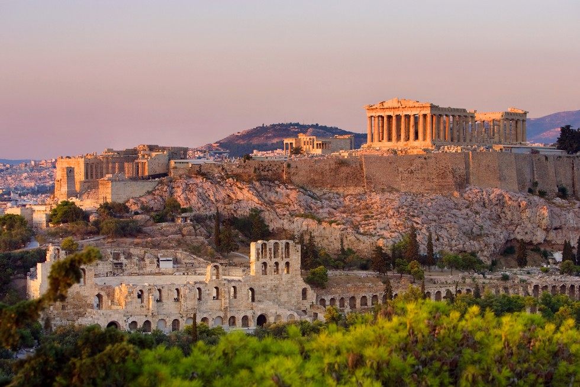
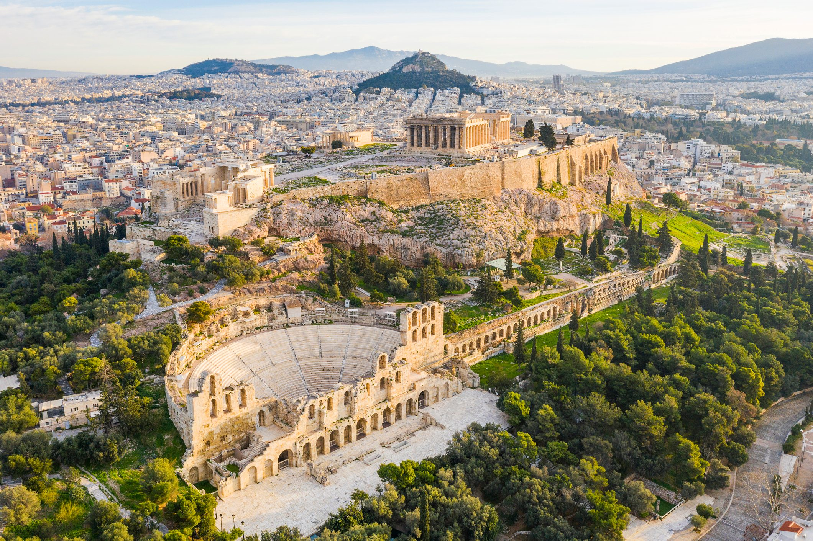
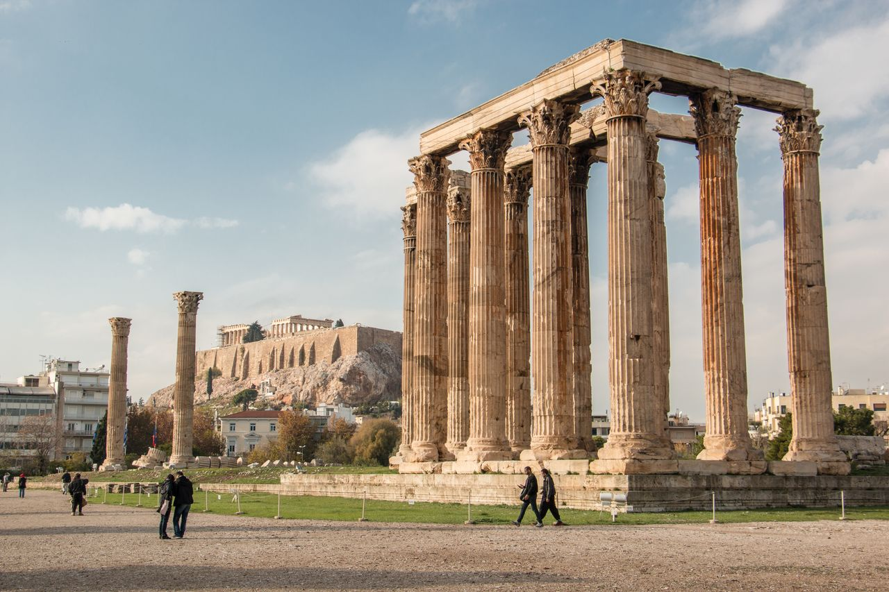
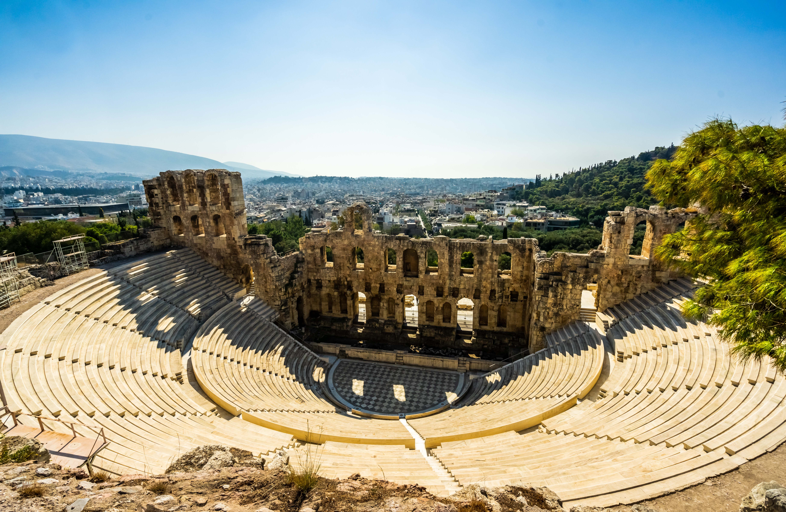

Ateny
Ateny Paryż Rzym

Ateny – stolica i największe miasto Grecji, jeden z najważniejszych ośrodków turystycznych Europy z zabytkami kultury antycznej i zarazem dziesiąty co do wielkości zespół miejski w Unii Europejskiej na poziomie 3,5 mln mieszkańców (cała metropolia ma blisko 4 miliony mieszkańców.) Ateny położone są w administracji zdecentralizowanej Attyka, w regionie Attyka, w jednostce regionalnej Ateny-Sektor Centralny, w gminie Ateny.
Zabytki:
Akropol Ateński

Akropol ateński– akropol w Atenach, położony na wapiennym wzgórzu o wysokości względnej 70 m (prawie 157 m n.p.m.), zamieszkany w neolicie, w okresie mykeńskim znajdował się tu pałac z megaronem, od VI w. p.n.e. miejsce kultu Ateny. Świątynie zbudowane w okresie archaicznym zostały zniszczone podczas wojen perskich. Podczas odbudowy zainicjowanej przez Peryklesa powstał tu kompleks świątyń: Partenon, Erechtejon, Apteros, sanktuarium Artemidy Brauronia i Propyleje. Zniszczone rzeźby, elementy starszych budowli zostały użyte przy poszerzaniu tarasu w kierunku południowym (odnaleziono je podczas prac archeologicznych rozpoczętych w latach 70. XVIII wieku, w tzw. „rumowisku perskim”). Perykles odbudowę Akropolu powierzył Fidiaszowi, a w pracach uczestniczyli architekci: Iktinos, Mnesikles i Kallikrates.W 1987 roku akropol ateński został wpisany na listę światowego dziedzictwa UNESCO.
Świątynia Zeusa

Świątynia Zeusa Olimpijskiego– największa spośród świątyń starożytnej Grecji, znajdująca się w Atenach, poświęcona Zeusowi. Jej budowa trwała z przerwami od VI wieku p.n.e. do II wieku n.e.Budowa świątyni rozpoczęta została za rządów Pizystratydów, zarzucono ją jednak po obaleniu tyranii w 510 roku p.n.e. Roboty wznowił w 174 p.n.e. król Syrii Antioch IV Epifanes, powierzając ich prowadzenie rzymskiemu architektowi Kossutiuszowi. Po śmierci władcy w 164 p.n.e. zostały przerwane. Po zdobyciu Aten przez Sullę w 86 p.n.e. część kolumn z placu budowy wywieziono do Rzymu, gdzie zostały wykorzystane w świątyni Jowisza na Kapitolu. Drobniejsze roboty podjęto za panowania Augusta. Ostatecznie sanktuarium wykończył i poświęcił w 132 roku cesarz Hadrian.Świątynia posadowiona została na olbrzymim stylobacie o wymiarach 41,12×107,8 m. Wspierała się na łącznie 104 kolumnach: wzdłuż boków biegły dwa rzędy po 20 kolumn, od frontu i tyłu trzy rzędy po 8 kolumn. Według oryginalnego planu z czasów Pizystratydów była prawdopodobnie budowlą dorycką, w czasach Antiocha Epifanesa porządek zmieniono jednak na koryncki. Świątynia przypuszczalnie nie była nakryta dachem. W celli stała wykonana w technice chryzelefantynowej kopia posągu Zeusa dłuta Fidiasza.
Teatr Dionizosa

Teatr Dionizosa– starożytny teatr grecki, znajdujący się u stóp Akropolu w Atenach. sytuowany na południowym stoku Akropolu, koło świątyni Dionizosa Eleutherosa, teatr został zbudowany w połowie VI wieku p.n.e. – początkowo jako prowizoryczna konstrukcja z drewnianymi ławami i drewnianą skene. Stały, kamienny teatr został wzniesiony dopiero przez Likurga około 330 p.n.e., który również znacznie powiększył teatr, dodając drugą diazomę. W okresie hellenistycznym i rzymskim budowla została poddana licznym przebudowom. Pośrodku teatralnej orchestry stał ołtarz (thymele) Dionizosa, wokół którego gromadził się chór.
Łuk Hadriana

Łuk Hadriana – starożytny rzymski łuk triumfalny, znajdujący się w pobliżu Olimpiejonu w Atenach. uk został wzniesiony za panowania cesarza Hadriana w ramach projektu rozbudowy miasta, na granicy zbudowanej z rozkazu cesarza nowej dzielnicy. Fakt ten upamiętniają wyryte na sklepieniu budowli dwie inskrypcje. Od strony Akropolu napis głosi: „Oto są Ateny, starożytne miasto Tezeusza”, od drugiej strony zaś: „Oto jest miasto Hadriana, nie Tezeusza”.
Panathenaic Stadium

Panathinaiko Stadio lub Kalimarmaro; pol. Stadion Panateński) – starożytny stadion sportowy, jedna z najbardziej znaczących, zrekonstruowanych budowli w Atenach. Położony jest w naturalnym zagłębieniu terenu pomiędzy dwoma wzgórzami Agra i Ardettos, nad rzeką Ilisos.Zbudowany w tym miejscu został w latach 330–329 p.n.e. przez Lykurgosa na wielkie igrzyska Panateńskie. Później, od 140 do 144 n.e. został przebudowany przez Herodesa Attikusa do formy, którą odnaleziono podczas wykopalisk w 1870. Jego wymiary to 204,7 metrów długości i 33,35 metrów szerokości, pomieścić mógł do 80 000 widzów. Aktualnie stadion często jest miejscem ważnych wydarzeń kulturalnych.